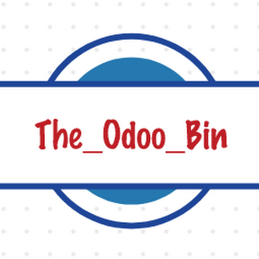
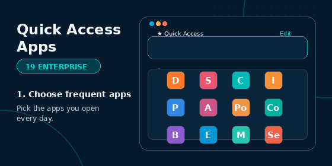
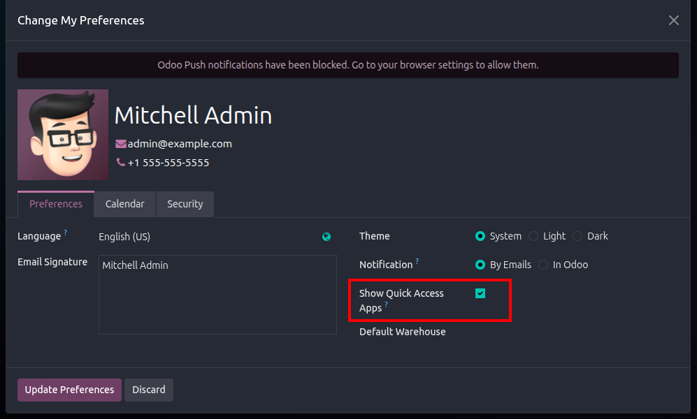
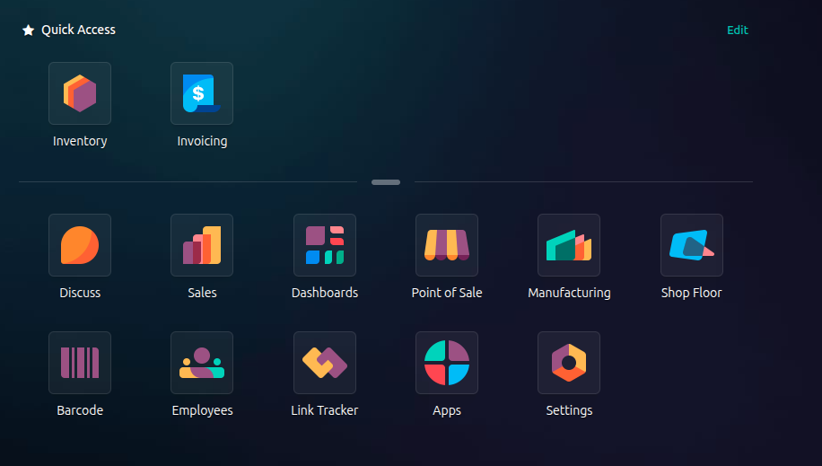
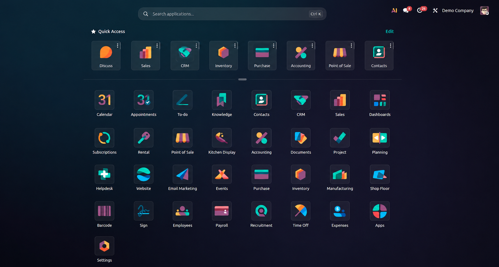

|
 |
Odoo 19 Enterprise Home Menu Utility
Quick Access Apps
Pin frequently used applications into a Quick Access row above the standard Odoo 19 Enterprise app launcher. |

Animated preview: pin apps, move them to Quick Access, hide duplicates, and manage the user preference.

User Preferences option to enable or disable Quick Access Apps.

Quick Access Apps row with pinned apps hidden from the lower app grid.
|
Pinned App Row
Adds a Quick Access section above the app grid, matching the Enterprise home menu style shown in the preview. |
Per-User Preferences
Stores each user's selected quick access apps separately, without changing the normal app menu order. |
|
Edit Controls
Users can add apps from the launcher, remove pinned apps, move pinned apps left or right, and disable the Quick Access row from Preferences. |
Safe Defaults
Seeds common apps when available and automatically ignores apps that are not installed or not visible to the current user. |

Static detail preview of the Quick Access row above the standard Enterprise app launcher.
For Odoo-related queries or customization requests, contact theodoobin@gmail.com.